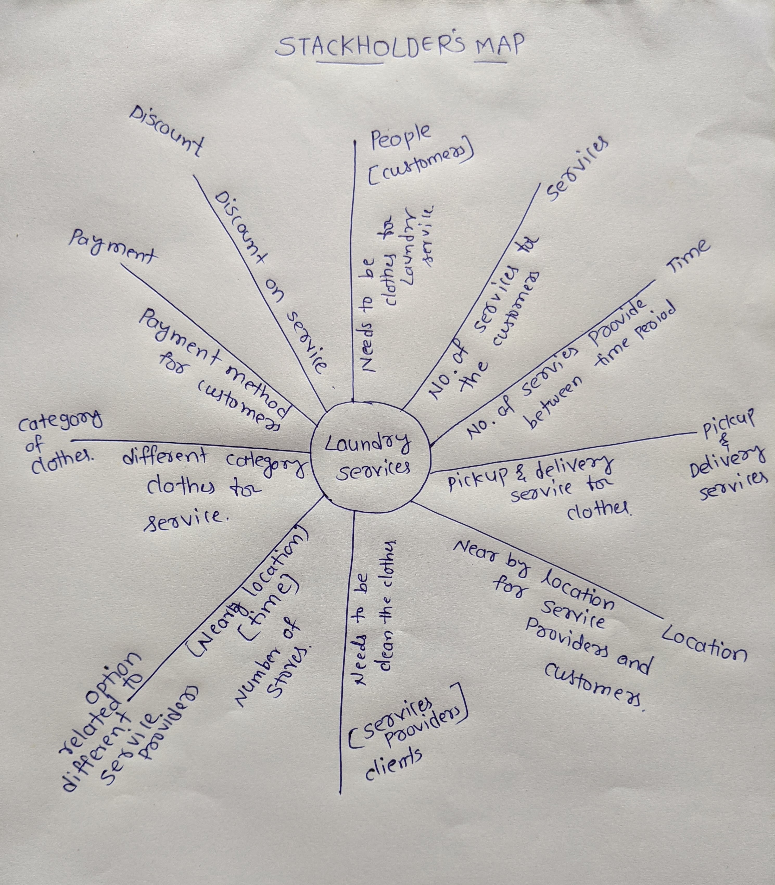
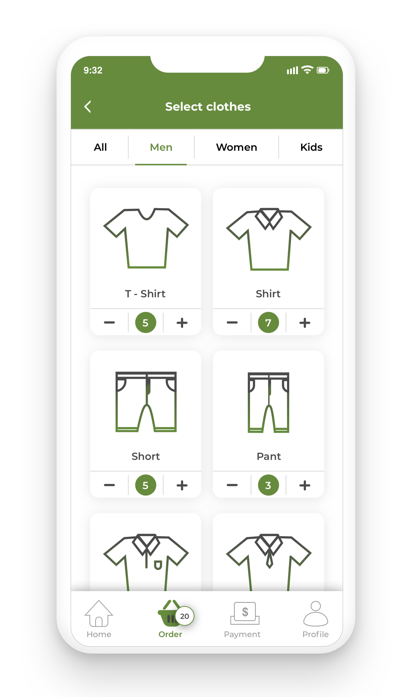

Overview
In the city of Hyderabad [India] there are so many people using the manual method for laundry service for everyday life. Laundry service providers provide different kinds of services like cleaning, washing clothes, ironing and folding clothes, pick up the clothes and provide the service and deliver to their owners, also use payment for the service also manual. Since, I have got an idea about the laundry app design for the laundry service app that makes it easy to use for the customers and laundry service providers. I have designed the Clean Fold mobile App design, the app provides different services for customers and clients like pickup the clothes, provide the laundry service and deliver to their owners, make payment through online. Also the user can view the tracking of the delivery clothes. Clean fold laundry service mobile app design is a project of the UI/UX design specialization course through the CalArts & Coursera.
Project Details:
Challenge: To create a mobile app design that is easy to use for the laundry service providers and customers.
Timeline: 4 Weeks
Role: As a designer, I have to create the user friendly mobile app. I have to research the existing laundry app, research on service providers and customers and their requirements and needs, goals. Finally create the clickable prototype for the mobile app.
Methods: User research, user personas, mappin the content and interaction, User testing, creating sitemap, paper prototype, visual design, iconography, graphic design, wire-frame, clickable prototype for mobile app.
Tools: Pen & Paper, photoshop, illustrator, Sketch App, Adobe XD, Adobe Illustrator.
PROCESS
User Research:
In the user research process, I have started to start research and observe existing apps and note down the user requirements and user goals. After that, I have prepared questionnaires and interviewed laundry service providers and customers. With their permission, I have recorded the user pain points and goals.
What I have found from user research
User Personas:
User personas help me to understand the user pain points and user goals. I have created the customer as well as laundry service provider personas. From this personas I have noted down the customer requirement and laundry service provider requirement.


From the personas, I have write down client needs and User needs. The website needs to enable the user and client to:
Customer requirements:
Laundry service provider [Client] requirements:
Sitemap :
MAPPING CONTENT & INTERACTION, USER TESTING, CREATING SITEMAP:
Mapping the content and the interaction is useful for organizing the content and creating a functional design for the mobile app. Using the mapping the content and interaction helps me to create a sitemap for the mobile app. Creating the sitemap is a way that I have created the easy navigation for the mobile app which helps me to create a paper prototype of the mobile app design.

Paper prototyping & User testing:
From the sitemap, I have created the paper prototype for the mobile app design. Then I have conducted multiple walkthroughs for the paper prototype that helps me to better understand the flow of the prototype and easy to interact with the first time user. Then, I have conducted Nielsen's ten usability heuristics, that helps me to major and minor usability problems for users while using the app. Finally, I have conducted the user test with real users and then listed down the user problems while using the prototype.
What did I find from the user testing?
Wireframing


Visual Design


Learnings
Clickable Prototype:
